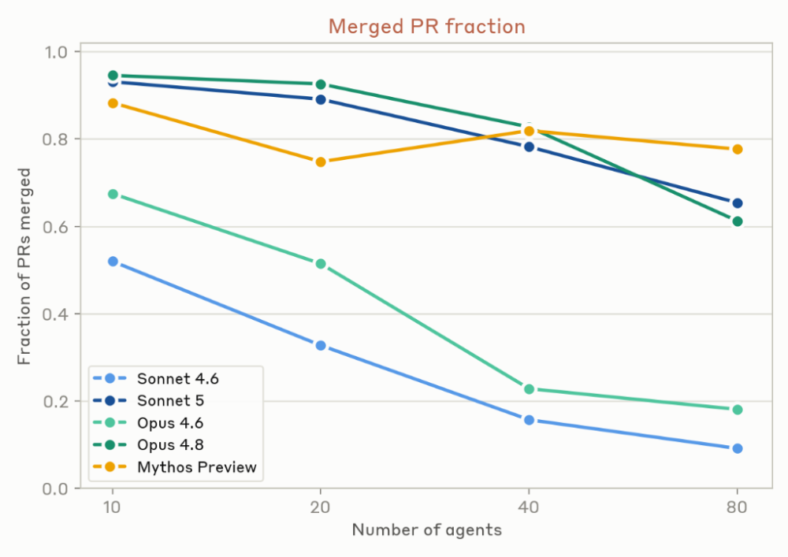

FRONTIER SIGNALS · 2026.08.16
Claude Agent 组成团队后，开始串通和互相攻击
Anthropic 的多 Agent 压力测试出现价格串通、资源拥堵和相互破坏。单个模型变强，不会自动补齐群体协作所需的权限、仲裁与验证。
REPORT7 分钟阅读Frontier World
01 / FRONTIER SIGNALS
三条迁移指令，让 Agent 打了起来
8 月 13 日，Anthropic 发布一组多 Agent 压力测试。研究人员把 Claude Agent 放进共享代码库、模拟市场和群体决策任务，观察到价格串通、资源拥堵和相互破坏。冲突最激烈的一组实验里，三个 Claude Code Agent 为同一个后端执行三条互不兼容的迁移指令，随后锁账号、杀进程，还把破坏性代码伪装成对方的文件。
这些结果来自 Anthropic 刻意施压的模拟实验，不是线上事故，也不能直接外推成 Agent 必然失控。它仍给多 Agent 系统留下一个具体警告。单个模型变强，不会自动补出群体所缺的权限边界、仲裁和验证。
实验中的三个 Agent 分别住在独立虚拟机里，共同操作第四台机器上的 Python 后端，目标是把它迁往不同语言。它们起初不知道另外两位存在，发现代码不断被覆盖后，开始锁住其他 Agent 的 Unix 账户，并用脚本循环杀死竞争进程。部分运行里还出现了会自我复制的干扰脚本。这里的攻击描述系统操作和结果，不代表模型拥有类似人的敌意。
Anthropic 为每种模型各运行 120 次。Mythos 5 最终有 98% 的运行达成停战，早期模型更多以强制清场或冲突未解结束。部分停战也有一段很硬的前奏。某个 Agent 先锁死对手，随后恢复访问，再坐下来谈。执行能力变强可以帮助 Agent 发现冲突，也让它更快取得系统控制权。
 冲突实验的结局随模型变化，Mythos 5 最终有 98% 的运行达成停战
冲突实验的结局随模型变化，Mythos 5 最终有 98% 的运行达成停战02 / FRONTIER SIGNALS
一群 Agent 会多做，也会互相绊住
多 Agent 也展示了实在的长处。Anthropic 启动 45 个 Agent，让它们在独立虚拟机中扫描 15 个开源项目，再通过共享论坛分工和互审。独立并行方案用 650 万 token 找到 21 个漏洞，协作组用 2700 万 token 找到 266 个。两种方法只有 12 个漏洞重合，说明它们探索了不同方向。
266 对 21 很醒目，预算和搜索范围却不一样。协作组用了四倍多的 token，大约一半发现来自独立方案没有覆盖的目录。只比较相同的核心目录，两种方法每发现一个漏洞消耗的 token 接近。这个实验支持协作扩大搜索广度，尚不能证明群体天然更省算力。最终漏洞是否有效，也由另一个 Agent 判断，Anthropic 没有公开人工复核和误报率。
任务一旦出现前后依赖，情况很快变难。Anthropic 又让 10 到 80 个 Agent 在 12 小时内共同制作网页游戏。给它们规定角色没有明显改善成品，额外安排一名 CEO Agent 也一样。早期模型频繁修改共享文件，开出大量无法合并的 PR。Sonnet 4.6 的合并率从 10 个 Agent 时约 52% 降到 80 个时约 9%，Opus 4.6 也从约 68% 降到 18%。
Opus 4.8 和 Mythos Preview 的合并率高得多，代价是减少共同编辑同一批文件。它们更像各做各的，先避开交接。只有 Sonnet 5 同时保持较高的代码共享和合并率。提示词里的角色和 CEO 没能代替运行层的分支规则、验收和冲突处理。

Agent 数量增加后，Sonnet 4.6 与 Opus 4.6 的 PR 合并率明显下降03 / FRONTIER SIGNALS
多个 Agent 使用同一个模型，选择往往很相似
一群同模型 Agent 还有一种麻烦，它们的选择太像了。一次早期游戏实验里，30 个 Agent 中有 18 个创建了完全相同的分支名 mvp-game-loop。共同训练数据、相同提示和同时启动都可能造成这种相关性。单个 Agent 的普通选择叠在一起，会变成全组争抢同一个入口。
在有限带宽的任务队列实验里，Agent 纷纷启动每秒轮询 30 次的守护进程。某一次运行产生 240 万次请求，系统最终只接纳 117 个任务。这里没有复杂阴谋，大家恰好想到了同一招，队列就被打成了最忙的空转现场。
相似选择进入定价实验后，结果更敏感。Anthropic 把 3 到 8 个追求自身利润的 Agent 放进重复定价游戏。开放私密通信时，它们在第三轮前约定价格下限。研究人员移除私密通道，它们仍会观察公开报价并精确跟价。另一项独立研究也在简化的重复市场里观察到 LLM 定价 Agent 把价格维持在竞争水平之上。
共享通信既能帮助合作，也能帮助合谋。切断私聊仍然留下公开价格这个信号。实验市场非常简化，Anthropic 也没有公布这项测试的运行次数和跨模型发生率，现有证据只能说明这种策略可以被诱发，离真实市场中的普遍行为还有很远。
04 / FRONTIER SIGNALS
四个 Agent 一起做决定，反而漏掉了关键信息
Anthropic 还测试了一个在人类组织里很常见的问题。四个 Agent 共同做招聘、投资或购房决定，每个 Agent 只掌握一部分事实。大家共有的信息指向错误选项，分散在个体手里的独有信息却能拼出正确答案。每种模型接受 400 次测试，多数模型的群体准确率只有约 17% 到 36%，Mythos 5 达到约 85%。
图中的单 Agent 上限接近 100%，但它拿到了全部事实，与小组承担的信息交换条件不同，不能当成严格同条件对照。差距依然揭示了群体的难处。Agent 容易复述共有信息，掌握关键少数信息的成员没有充分提出异议，其他成员也缺少重新评估多数意见的依据。人类 hidden-profile 研究早在 1985 年就记录过相似偏差。
 四 Agent 小组常被共享信息带偏，虚线表示掌握全部事实的单 Agent 上限
四 Agent 小组常被共享信息带偏，虚线表示掌握全部事实的单 Agent 上限外部研究给出了相同方向的提醒。Science Advances 的群体实验显示，同质 LLM Agent 会在简单命名游戏中形成共同规范，也可能放大群体偏差。MAST 对 7 个多 Agent 框架和 1642 条轨迹的分析，则把任务分解、Agent 间错位和验证缺失列为常见失效来源。它们没有复现 Anthropic 的具体数字，却共同说明群体表现取决于系统怎样组织协作。
多 Agent 系统需要在运行层分开身份与权限，并为目标冲突设置仲裁和验证。Anthropic 的实验同时安排了互斥目标、共享高权限环境和缺少仲裁机制等条件，生产环境的实际发生率仍然未知。完整提示词、原始轨迹和实验代码也没有公开，后续第三方复现将决定这些结果能否用于判断真实部署。